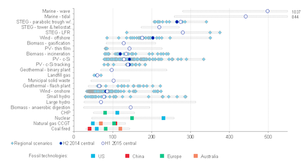

Cost Benefit Analysis#
This week we delve into cost benefit analysis methods, leading up to using Net Present Value (NPV) calculations, and ending with Levelised Cost of Electricity (LCOE).
Time value of money means that having money now is more valuable than having it in the future, and consequently interest is important in making decisions on investment.
We can calculate Net Present Value (NPV) if we understand the difference between present and future value, and how discount factors are important.
There are complex procedures for including environmental impacts in NPV calculations.
Return on investment is the return rate at which NPV = 0, and offers a minimum return rate useful in decision making.
There are many aspects to the cost of electricity, and we can combine these to calculate the levelised cost of electricity which is a measure of the long-run marginal cost of electricity generation.
Time Value of Money#
A key idea in finance is the time value of money, which means that having money now is more valuable than having it in the future. You’d prefer to have £100 right away than wait for it. Now, think about it from the other side. What if I owed you money and I really wanted to delay paying you back? To make up for your preference for getting money sooner, I would have to pay you more than what I owed. This extra payment to make up for the time delay is called interest. There’s also another aspect to consider—risk. If you had concerns about whether I could pay you back in the future, you might charge me even more interest to cover that risk.
Interest#
Interest is an important concept in loans, bonds (which are like special financial papers), and finance in general. Let’s think about it like your bank account. You give some money to the bank, and in return, they pay you for letting them use your money to invest in different things. What they pay you is called interest, and it’s usually shown as a percentage of the money you put in—this percentage is called the interest rate. So, if you deposit £1 in the bank and the interest rate is 5%, you’ll get £0.05 in interest.
Interest can be paid out at different times, e.g., every month, every three months, every year, or even all the time. If you earn some interest in one year, in the next year, you not only earn interest on the original amount you put in but also on the interest you earned before. This idea is called compounding interest. We can figure out how much £1 will be worth in \(x\) number of years when it’s compounding a \(n\) number of times each year at a specific interest rate.
Present Value, Future Value, and the Discount Factor#
Present value is a financial concept that calculates the current worth of future cash flows by considering factors such as the expected cash flows, the time period over which they will be received, and a discount rate. The present value is calculated by taking the future money you expect to get from an investment and bringing it back to today. To do this calculation you need three things: first, you need to know how much money you expect to get (we call this the expected cash flows); second, you need to know how many years you’ll be getting that money for; and third, you need a discount rate. If the discount rate is high, it makes the present value lower, and if it’s low, it makes the present value higher. Bringing these together you can use this forumla:
where r is the rate of return and n is the number of periods.
Consider a scenario where you expect to earn a £5,000 lump sum payment in five years’ time. If the discount rate is 8.25%, you want to know what that payment will be worth today. So you calculate the present value: \(\frac{£5,000}{(1 + 0.0825)^5} = £3,363.80\)
Net Present Value#
Net present value (NPV) is a financial measuring tool. It’s the difference between the current worth of the money coming in and the money going out over a certain time. We use NPV when deciding on big things like whether a planned investment or project will make us money. It helps us figure out if the project is worth it.
If there’s one cash flow from a project that will be paid one year from now, then the calculation for the NPV of the project is as follows:
where \(i\) is the required return or discount rate, and \(t\) is the number of periods.
If analysing a longer-term project with multiple cash flows, then the formula for the NPV of the project is as follows:
where \(R_t\) is the net cash flow for single time periods \(t\).
Play with the tool below to explore the impact of initial investment, annual cash inflow, discount rate, and number of years in an NPV calculation.
Show code cell source
from IPython.display import IFrame
IFrame('https://eee-apps-836a08e1d2dd.herokuapp.com/cba-1', width='100%', height=650)
Including environmental impacts#
Incorporating environmental considerations into the Net Present Value (NPV) analysis can take a full systematic approach encompassing distinct stages.
Identification of potential environmental impacts is imperative. This involves delineating and characterizing the environmental ramifications associated with the project, spanning factors such as air and water pollution, habitat disruption, and carbon emissions.
A quantitative assessment is undertaken to ascertain the magnitude of the identified environmental effects. Quantification methodologies may include the measurement of carbon emissions in terms of CO2 equivalent or the estimation of the monetary value correlated with pollution reduction.
The monetization of environmental impacts needs to be assessed. This involves the conversion of quantified environmental impacts into monetary values, a process often facilitated by diverse valuation methodologies such as cost of mitigation, replacement cost, or contingent valuation.
Then you can integrate the monetized environmental costs and benefits into the financial framework of the NPV analysis. Adjustments to the project’s cash flows are made to reflect the incorporation of environmental considerations. Specifically, environmental costs are deducted from cash flows, while environmental benefits are added.
The discount rate, integral to the NPV calculation above, may undergo adjustment to account for the temporal aspect of environmental impacts. Environmental costs or benefits occurring in the distant future may be subject to heightened discounting.
Upon modification of the NPV analysis to encompass environmental considerations, recalculations are conducted to derive an augmented NPV. This integrated evaluation provides a more comprehensive perspective on the project’s sustainability and overall value.
You will try this yourself in this week’s self-assessment question comparing offshore wind turbines, where you will include a cost for an environmental impact in your NPV calculation.
Further reading - https://www.oecd-ilibrary.org/environment/cost-benefit-analysis-and-the-environment_9789264085169-en
Return on Investment (ROI)#
The expected return or Return On Investment (ROI) is the required interest rate to reach the point NPV = 0. We won’t go into details here but you could rearrange the equation for NPV earlier for \(r\).
Cost of electricity#
Broadly speaking all generation costs can be categorized into two groups depending on the point in time at which those costs are incurred: at the time of the investment decision or at the time of the production decision. The costs associated with the investment decision are usually called fixed or investment costs and the costs incurred only at the time of generation are called variable or generation costs.
Fixed costs are the cost of equipment, land, financing, project management, grid connection, and construction of the power plant. These are usually expressed per unit of installed capacity (per kW or per MW). Fixed costs are regarded as “sunk costs”, because once the plant is erected and fixed costs are incurred they cannot be recuperated. The plant may be sold or scrapped at some point but such a transaction usually yields only insignificant revenue.
Variable costs consist of fuel cost, operation and maintenance expenses and carbon dioxide emission charges, if applicable. They are typically calculated per unit of electricity generated (per MWh). Only variable costs play a role when it is necessary to decide whether to use an existing plant to produce electricity or not. Fixed costs are irrelevant to this production decision for the precise reason that they are sunk. For the investment decision, in contrast, both fixed and variable costs matter, as we will see further on.
Quasi-fixed costs. There is a third category that lies between fixed and variable costs, sometimes called quasi-fixed costs, which includes cost of labor; staff can be hired or fired after the investment decision at discrete points in time but not for every single production decision. In electricity generation, such quasi-fixed costs are small enough not to merit separate treatment and are subsumed in variable costs.
Cost structure of generation technologies. Electricity generation technologies vary dramatically in their cost structure. Some plants, such as nuclear, wind and solar power, have virtually zero variable costs: once they are built, they produce electricity virtually for free. This is in stark contrast to fossil fuel-based power plants. For example, variable costs (fuel costs and emission charges) comprise approximately 40% of the total costs of a coal-fired power station and as much as 60% of a gas-fired combined cycle plant. In general technologies with low CO2 emissions, which tend to be the technologies that use no fuel, are also those where fixed costs make up a higher percentage of total costs.
Levelised cost of electricity (LCOE)#
While the distinction between fixed and variable costs of electricity is important, for various analytical and practical purposes it is often useful to compare the “average cost” of generating electricity from different power plants. To this end, fixed and variable costs be meaningfully combined into one single metric.
LCOE. A cost metric that is frequently used for this purpose is the levelized cost of electricity (LCOE), also called the levelized energy costs (LEC). This is defined as the aggregated discounted lifetime cost (fixed plus variable costs) of generating electricity per unit of output and is expressed in EUR per MWh. It is calculated using the following formula:
where LCOE is the levelized cost in £ per MWh, \(C_{fix}\) is the fixed cost incurred for setting up the project, \(C_y\) are other costs incurred in year \(y\), \(r\) is the discount rate, \(Y\) is the technical lifetime in years, and \(G_y\) is electricity generation in MWh. The costs are called levelized because they are “leveled” over all units of output. Levelized costs can be calculated for a specific power plant or for generic types of generation technologies.
LCOE varies for technologies, but may also vary between geographical regions.

Show code cell source
from IPython.display import IFrame
IFrame('https://eee-apps-836a08e1d2dd.herokuapp.com/cba-2', width='100%', height=180)
NB: Treat with care since LCOE treats all generation equally and doesn’t take account of time or place of generation! This means that generation which can’t be used because of network constraints or mismatch with timing of demand is still treated equally.
Cost of renewable generation#
There is much more detail we can go into in cost benefit analysis. The cost of renewable energy has dramatically impacted on the investment in decarbonising energy systems in recent times. Please look at this webpage for more details on this - http://www.open-electricity-economics.org/book/text/06.html#cost-of-renewable-electricity.